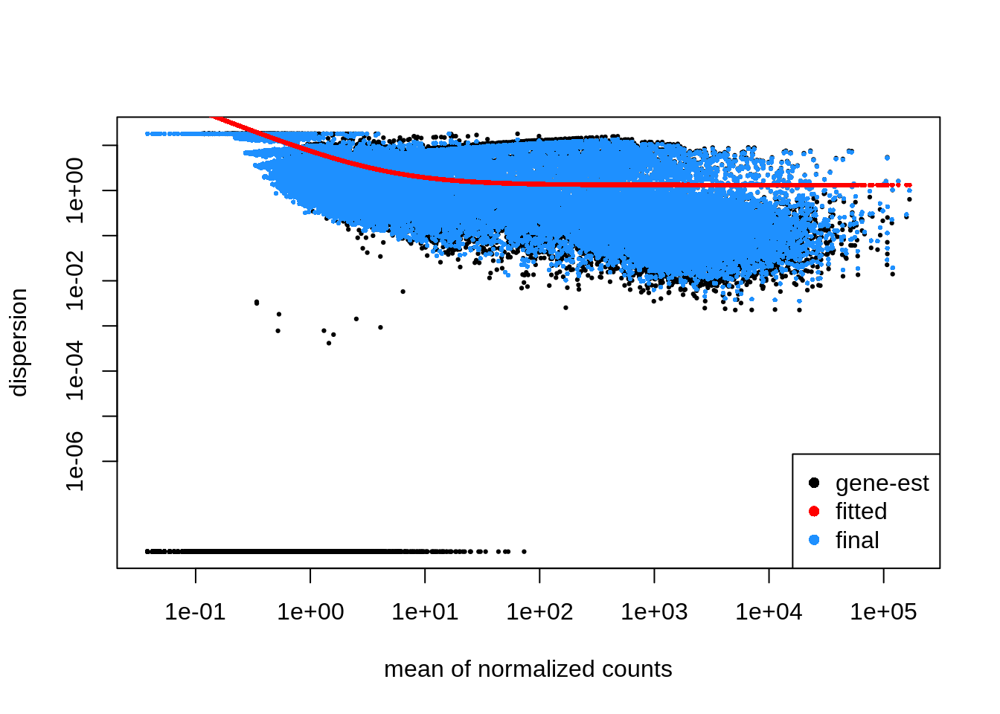

DESeq2 Analysis with R: Part 02
Bioinfo-Core @ MPI-IE
Fri Apr 28 09:43:51 2023
Goals: DESeq2 workflow
- repeat: generating DESeq-object (data, metadata, design)
- filtering: samples and genes
- transformations: normalization and sizefactors
- modeling: variance + dispersion
- statistical tests
- extracting results
Preparation (Repeat)
Load Libraries
suppressPackageStartupMessages({
library("tidyverse")
library("DESeq2")
library("pheatmap")
})Load data
data <- readr::read_tsv("data/myeloma/myeloma_counts.tsv")## Rows: 57905 Columns: 19
## ── Column specification ────────────────────────────────────────────────────────
## Delimiter: "\t"
## chr (1): gene_id
## dbl (18): JJ_CTRL_1, BM_CTRL_2, BM_CTRL_3, BM_AMIL_1, BM_AMIL_2, BM_AMIL_3, ...
##
## ℹ Use `spec()` to retrieve the full column specification for this data.
## ℹ Specify the column types or set `show_col_types = FALSE` to quiet this message.data <- data %>%
column_to_rownames(var="gene_id") %>%
mutate(across(where(is.double), as.integer))
data %>% str()## 'data.frame': 57905 obs. of 18 variables:
## $ JJ_CTRL_1: int 0 0 1637 453 719 2 2 61 2354 3025 ...
## $ BM_CTRL_2: int 0 0 1792 614 961 3 1 76 2808 4071 ...
## $ BM_CTRL_3: int 0 0 2368 854 1280 6 2 98 3963 4837 ...
## $ BM_AMIL_1: int 0 0 2365 623 937 0 3 180 1298 2242 ...
## $ BM_AMIL_2: int 0 0 4808 585 1247 0 0 176 1240 2818 ...
## $ BM_AMIL_3: int 0 0 2098 431 852 0 0 163 812 1981 ...
## $ BM_CTRL_1: int 0 0 1664 687 884 1 2498 1543 1590 2097 ...
## $ JJ_CTRL_2: int 0 0 1878 869 1058 4 2860 2165 2018 2906 ...
## $ JJ_CTRL_3: int 0 0 1367 619 616 1 1991 1513 1331 1971 ...
## $ JJ_AMIL_1: int 0 0 1155 512 840 3 2274 1262 552 1178 ...
## $ JJ_AMIL_2: int 0 0 3020 953 1320 3 3197 2265 1316 2099 ...
## $ JJ_AMIL_3: int 0 0 3834 1049 1161 5 3817 2411 1194 2075 ...
## $ BM_TG_1 : int 0 0 2461 845 1944 5 3 53 3384 3274 ...
## $ BM_TG_2 : int 0 0 1962 757 1528 1 0 40 2918 2785 ...
## $ BM_TG_3 : int 0 0 2417 859 2106 3 1 43 3516 3610 ...
## $ JJ_TG_1 : int 0 0 1601 823 1350 2 2917 1280 1999 1889 ...
## $ JJ_TG_2 : int 0 0 3110 1342 2569 2 4345 1998 3321 3467 ...
## $ JJ_TG_3 : int 0 0 2129 904 1654 3 3278 1434 2352 2404 ...data %>% dim()## [1] 57905 18data %>% head()Load Metadata
metadata <- readr::read_tsv("data/myeloma/myeloma_meta.tsv")## Rows: 18 Columns: 3
## ── Column specification ────────────────────────────────────────────────────────
## Delimiter: "\t"
## chr (3): sample, celltype, condition
##
## ℹ Use `spec()` to retrieve the full column specification for this data.
## ℹ Specify the column types or set `show_col_types = FALSE` to quiet this message.metadata <- metadata %>%
mutate(celltype = factor(celltype)) %>%
mutate(condition = factor(condition)) %>%
column_to_rownames("sample")
metadata %>% str()## 'data.frame': 18 obs. of 2 variables:
## $ celltype : Factor w/ 2 levels "BM","JJ": 2 1 1 1 1 1 1 2 2 2 ...
## $ condition: Factor w/ 3 levels "AMIL","DMSO",..: 2 2 2 1 1 1 2 2 2 1 ...metadata %>% dim()## [1] 18 2metadata %>% head()#check if the col and rows are in the same order:
all(rownames(metadata) == colnames(data))## [1] TRUE# Convert to factors
metadata$celltype <- metadata$celltype %>% as.factor()
metadata$condition <- metadata$condition %>% as.factor()Create Design
my_design <- ~celltype + conditionCreate DESeq Object
dds <- DESeqDataSetFromMatrix(countData=data, colData=metadata, design=my_design)
class(dds)## [1] "DESeqDataSet"
## attr(,"package")
## [1] "DESeq2"dim(dds)## [1] 57905 18First Inspection (PCA)
Previously you noticed that the PCA shows a problem with our data.
# define function (see day 1)
myPlotPCA = function(dds, nt=500) {
M <- counts(dds) # get counts from dds
Mt <- log2(M + 1) # a simple (and fast) transformation
ann <- data.frame(colData(dds)) # get annotations from colData = metadata
cn_col <- c("#1B9E77", "#D95F02", "#7570B3") # condition colours
names(cn_col) <- levels(ann$condition) # name the color vector
top <- Mt %>% rowVars() %>% order(decreasing=TRUE) %>% head(nt) # calculate variance for each row and sort
pca <- Mt[top,] %>% t() %>% prcomp(scale=TRUE) # perform PCA
rld_PCA <- as.data.frame(pca$x[,1:2]) # only take PC1 and PC2 (column 1 + 2)
rld_PCA$condition <- ann[rownames(rld_PCA),"condition"] # add condition label from ann
rld_PCA$celltype <- ann[rownames(rld_PCA),"celltype"] # add celltype label from ann
ggplot(rld_PCA, aes(PC1, PC2, color=condition, shape=celltype)) +
geom_point(size=3) +
scale_colour_manual(values=cn_col)
}
myPlotPCA(dds)
Poll 2.1: What should we do next ?
Filtering
Filter Samples - 10 min
Task: Filter the problematic samples (columns 1 and 7) from dds object and produce a new PCA plot.
Hint: Although the dds object is a more complex data
class it also has dimensions assigned – check dim(dds) –
and samples can be un/selected like columns in a standard
dataframes.
dds_clean <- dds[, -c(1,7)]
myPlotPCA(dds_clean)Filter Genes - 10 min
- remove genes (rows) that have very low counts
- arbitrary threshold: < 1, < 10
- benefits:
- increase robustness of analysis
- reduces memory size of ‘dds’ object => increases the speed
Task Filter out the genes that have a total amount of only zero or 1 counts.
Hint: Have a look at the output of
dds_clean %>% counts %>% rowSums() %>% head()
rs = dds_clean %>% counts %>% rowSums()
dds_clean = dds_clean[rs>1,]Poll 2.2 How many samples and genes are left in the filtered data set?
Relevel Factors - 10 min
Remember: factors are used to represent categorical data !
Internally they are stored as integers and per default they are sorted alphanumerically. It may be more convenient to sort them by some user defined order - this is called relevelling

Factor order
Task Reorder the condition with ‘DMSO’ as baseline - 2 min.
Hint: Use the relevel function
This is the order of the factors before and after re-arrangement:
#initial factor arrangement:
dds_clean$condition## [1] DMSO DMSO AMIL AMIL AMIL DMSO DMSO AMIL AMIL AMIL TG TG TG TG TG
## [16] TG
## Levels: AMIL DMSO TGdds_clean$condition <- relevel(dds_clean$condition, ref='DMSO')
#dds_clean$condition <- factor(dds_clean$condition, levels = c ('DMSO', 'TG', 'AMIL')) # alternatively
dds_clean$condition## [1] DMSO DMSO AMIL AMIL AMIL DMSO DMSO AMIL AMIL AMIL TG TG TG TG TG
## [16] TG
## Levels: DMSO AMIL TGNotice: Per default DESeq2 will make comparisons with respect to the 1st level, unless specified more explicitly (contrasts, see tomorrow).
Preparation Summary
We have now covered the most important preparation steps:
- load library and data
- define DESeq data object
- count data:
counts()– not normalized. data frame of integers - meta data:
colData()– added data on samples. data frame of numerical or categorical variables - design:
design()– variables to be modeled. formula will be converted to design matrix with dummy variables
- count data:
- Filtering & Transformation & Relevel
This is before any statistical analysis ! A real-world analysis would likely be iterative
Message: Document your decisions, parameters, workflows and software versions carefully - use notebooks !
Break - 10 min
The DESeq workflow (60 min)
Everything we did until now was before any statistical analysis. Quite some work stil needs to happen. Luckily, our life is made easy (again), as DESeq2 wrap up the rest in one convenient function:
dds <- DESeq(dds)
dds_clean <- DESeq(dds_clean)## estimating size factors## estimating dispersions## gene-wise dispersion estimates## mean-dispersion relationship## final dispersion estimates## fitting model and testingThere are several steps to generating differential expression results, and they are wrapped together in the DESeq() function. The 3 main steps are of the workflow are:
- Normalization - estimateSizeFactors()
- estimating dispersions - estimateDispersions()
- general linear model fit for each gene and testing - nbinomWaldTest()
a. Normalization
As mentioned yesterday, raw counts cannot be directly used to compare samples. To allow comparison we need to normalize. Note that this is also needed for exploratory analysis and visualisation.
A couple of reasons for normalization include:
sequencing depth

‘doubling of expression due to sequencing depth’. Image from github.com/hbctraining
gene length

‘gene x and y have similar levels of expression, though gene x has way more reads aligned due to its length.’. Image from github.com/hbctraining
compositional bias

‘compositional bias through contaminant (e.g. rRNA)’. Image from github.com/hbctraining
A number of commonly used normalization techniques:
| method | factors taking into account |
|---|---|
| CPM | sequencing depth |
| RPKM | sequencing depth and gene length |
| DESeq2 median of ratios | sequencing depth and RNA composition |
Workflow for the ‘median of ratios’:
- Take geometric mean per gene (of all samples!) -> ‘pseudosample’
- calculate the count / pseudosample ratio
- ‘sizefactor’ == median(ratios)
and many others exist.
Remember that DESeq2 needs raw counts as input (upon creating the dds object).
Task : Plot a heatmap of the first 10 rows of your counts (non-normalized), deseq normalized counts and if you are up for some manual labour, sequencing depth normalized counts.
Hint, counts() can return DESeq normalized counts as well with the argument normalized=TRUE! Hint2: geometric mean of a vector x can be calculated with exp(mean(log(x)))
ann <- data.frame(colData(dds_clean))
ann$seq_depth <- counts(dds_clean) %>% colSums()/1e6 # sequencing depth in millions
pheatmap(
counts(dds_clean) %>% head(10),
main="Raw",
cluster_cols=FALSE,
cluster_rows=FALSE,
annotation=ann
)pheatmap(
counts(dds_clean, normalized=TRUE) %>% head(10),
main="median of ratios",
cluster_cols=FALSE,
cluster_rows=FALSE,
annotation=ann
)
sfs <- (counts(dds_clean) %>% colSums()) / ((counts(dds_clean) %>% colSums()) %>% log() %>% mean() %>% exp())
ann$sfs <- sfs
pheatmap(
sweep(counts(dds_clean), 2, sfs, FUN = '/') %>% head(10),
main="sequencing depth",
cluster_cols=FALSE,
cluster_rows=FALSE,
annotation=ann
)
ggplot(ann) +
geom_point(aes(x=sfs, sizeFactor)) +
geom_abline(intercept = 0, slope = 1, color="red") +
theme_minimal() +
xlab("Size factor sequencing depth") +
ylab("Median of ratios sizefactor")
b. Dispersions
Why do we need to model count data ?
ggplot(data=counts(dds_clean) %>% data.frame()) +
geom_histogram(
aes(x=BM_CTRL_2),
stat='bin', bins=200
) +
theme_minimal()Recall that:
- Most genes have no counts (0-inflation)
- very large range of values
Even a non-trained eye can see that this is not normally distributed, so what distribution do we use ? For count data in general:
- Binomial distribution: e.g. number of heads upon tossing a coin n times.
- Poisson distribution: ~= binomial though n = infinite and event is very small (e.g. lottery). Appropriate for data where mean == variance
In RNA-seq data we have a very large number of RNA molecules, finding a particular gene ~= winning the lottery ?
Let’s have a look at the mean and variance of our counts within TG treated BM cells (the replicates).

Poll 2.3 : what kind of distribution would be the most appropriate for this data ?
A few remarks:
- Mean != variance
- higher expressed genes tend to have higher variances
- the variance in the ‘lower expressed regions’ is quite scattered
“heteroscedasticity”
If we would have money (and time) for a very large number of replicates, the high expression data points would move closer to the red line -> Poisson.
In practice, we stick to the negative binomial distribution as it’s a good approximation for data where mean < variance
Enter: Dispersion
gene-wise dispersion estimates
Within group variability (e.g. between replicates) is modeled by
parameter α, which describes variance of counts with:
Var = μ + α*μ², where α = dispersion,
Var = variance, and μ = mean. Accurate
estimation of α is critical:
- not a problem for large studies with many replicates
- but usually we only have 2-3 replicates => estimates of
αper gene are usually unreliable (genes with similar means usually have different dispersion values).
What do the dispersions represent ?
- dispersions are inversely related to the mean
- directly related to the variance
(Higher for small mean counts, lower for high mean counts)
mean-dispersion relationship & shrinking
DESeq2 shares dispersion information across genes to better estimate variation. The assumption here is that genes with similar expression values have similar dispersion values.
plotDispEsts(dds_clean)
what would be ‘bad’ dispersion ?
metadata_thrash <- metadata
metadata_thrash$celltype <- sample(metadata$celltype)
metadata_thrash$condition <- sample(metadata$condition)
dds_thrash <- DESeqDataSetFromMatrix(countData=data, colData=metadata_thrash, design=~celltype+condition+celltype:condition)
dds_thrash <- DESeq(dds_thrash)## estimating size factors## estimating dispersions## gene-wise dispersion estimates## mean-dispersion relationship## final dispersion estimates## fitting model and testingplotDispEsts(dds_thrash)
Signs of a ‘good’ dispersion plot:
- data should scatter around the curve
- dispersion should decrease with increasing mean of counts
- ‘clouds’ or ‘wonky shapes’ often indicate contamination / outliers
c. fitting model and testing
Finally we get a fit for each gene, and a Wald test can be used to test for significance of coefficients of interest.
Luckily DESeq2 wraps this in a convenient function as well: results(). By default we obtain DE genes for the last coefficient, though you can specify contrasts to get your comparison of interest (see tomorrow).
Task Please run results() on the dds_clean object and have a look at the result.
dds_res <- results(dds_clean)
dds_res## log2 fold change (MLE): condition TG vs DMSO
## Wald test p-value: condition TG vs DMSO
## DataFrame with 27351 rows and 6 columns
## baseMean log2FoldChange lfcSE stat pvalue
## <numeric> <numeric> <numeric> <numeric> <numeric>
## ENSG00000000419 2285.01560 0.317449 0.1790600 1.772863 7.62514e-02
## ENSG00000000457 775.42002 0.334962 0.0873551 3.834485 1.25827e-04
## ENSG00000000460 1300.43696 0.963262 0.0939353 10.254526 1.12928e-24
## ENSG00000000938 2.45443 -0.325046 0.7933991 -0.409688 6.82035e-01
## ENSG00000000971 1626.92877 0.309393 0.1271822 2.432678 1.49876e-02
## ... ... ... ... ... ...
## ENSG00000273486 40.217168 0.0672792 0.204936 0.328295 0.742689
## ENSG00000273487 0.162242 0.5041292 3.950877 0.127599 0.898466
## ENSG00000273488 13.780769 0.4674108 0.375660 1.244237 0.213412
## ENSG00000273489 1.064893 -1.1261042 1.341504 -0.839434 0.401226
## ENSG00000273492 0.856644 0.9590323 1.652038 0.580515 0.561568
## padj
## <numeric>
## ENSG00000000419 1.59065e-01
## ENSG00000000457 5.89362e-04
## ENSG00000000460 2.57159e-23
## ENSG00000000938 7.98272e-01
## ENSG00000000971 4.10219e-02
## ... ...
## ENSG00000273486 0.840324
## ENSG00000273487 NA
## ENSG00000273488 0.356482
## ENSG00000273489 0.565374
## ENSG00000273492 0.707109- baseMean: mean of normalized counts for all samples
- log2FoldChange: log2 fold change
- lfcSE: standard error
- stat: Wald statistic
- pvalue: Wald test p-value
- padj: BH adjusted p-values
Poll 2.4: What does a positive log2 foldChange and a significant padj value reflect ?
- how many genes do we get with padj < 0.05?
dds_res %>% subset(padj < 0.05) %>% nrow()## [1] 8532- get the 20 significantly expressed genes with the highest log2FoldChange.
dds_res %>%
data.frame() %>%
subset(padj < 0.05) %>%
arrange(abs(log2FoldChange), descending=TRUE) %>% head(20)d. Exporting results and further analyses

Export data
Task: Please export your results table to a csv / tsv file.
hint: write_tsv, write_csv(), write.table(), write_delim() ,…
write.table(dds_res %>% data.frame, file="DMSO_vs_TG_BMcells.tsv", col.names=T, row.names = T, sep = "\t", quote=F)shiny apps on MPI-IE website (https://rsconnect.ie-freiburg.mpg.de/shiny/)

Shiny apps
Genes2Functions

genes2functions_maplot

genes2functions_GO

genes2functions_GO